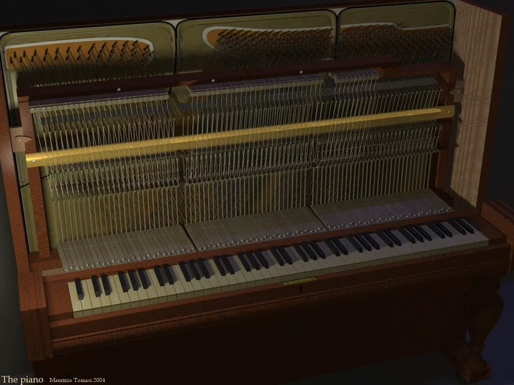
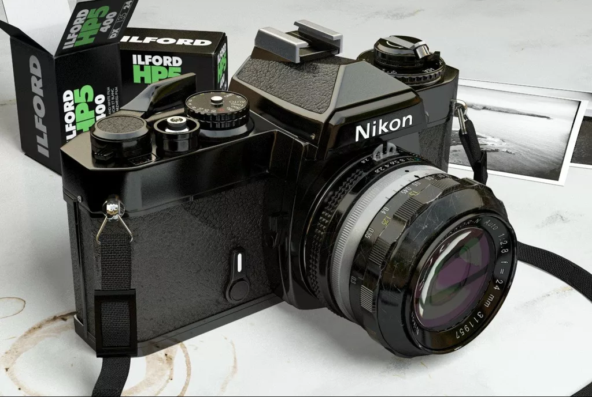
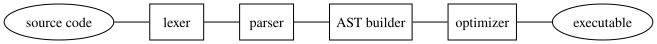

Calcolo numerico per la generazione di immagini fotorealistiche
Maurizio Tomasi maurizio.tomasi@unimi.it
So far, we have created photorealistic images by modifying the
demo command of our ray tracer.
You should all have encountered a certain cumbersome procedure by now! Every time we wanted to modify the image, we had to perform these actions:
main;This approach may not be sustainable: in fact, we force users to write code in the programming language we used!
Our goal is to define a format for describing scenes and to write code to interpret it.
Once implemented, the user will use a common editor like Emacs or
Visual Studio Code to create a file, called e.g. scene.txt,
and will run the program like this:
./myprogram render scene.txtand the Shape and Material objects will be
created in memory based on what is specified in scene.txt.
Unlike the demo command, however, it is easy to modify
scene.txt.
What awaits us is in fact the implementation of a compiler!
In the case where the language used is Julia or Python, which allows interactive use, the best solution would be to define the scenes directly on the REPL (or in a Jupyter/Pluto notebook)!
But in the case of programs written in C#, Nim or Rust, such a solution is obviously not feasible.
(This is even more true for those of you who provide binaries with each new release of the code: in that case, your users may not even have compilers installed!)
Implementing a compiler is a very useful educational activity:
Compiler theory teaches how to tackle a complex problem (compilation) by breaking it down into a series of simple problems that are solved sequentially: this is very instructive!
You will better understand the syntax of the languages used in this course.
You will understand why compilers sometimes produce misleading errors.
In case of syntax errors, you will have to provide the user with clear and precise information (e.g., “a parenthesis is missing on line NN”).
Creating new languages can be a lot of fun!
In our case, we will have to define a DSL and implement a compiler for it. Our approach will be very practical with just enough theory.
You shouldn’t be surprised that today we will invent a new “language” for our program: it’s a more common activity than you might think (even though physicists almost never do it 🙁).
It’s so common that some general-purpose languages allow you to define DSLs within themselves: these are the so-called “metaprogrammable” languages (e.g., Common LISP, Julia, Kotlin, Nim…).
We are not interested in databases, electrical circuits, or HTML pages: we are interested in defining 3D scenes.
To define our language, we should first get an idea of what the “competition” does.
So let’s see how three renderers allow you to specify the scenes that are provided as input: DKBTrace, POV-Ray, and YafaRay. Obviously, all these programs work from the command line, as ours will:
$ program input_file{ DKBTrace example file }
INCLUDE "colors.dat"
INCLUDE "shapes.dat"
INCLUDE "textures.dat"
VIEW_POINT
LOCATION <0 0 0>
DIRECTION <0 0 1>
UP <0 1 0>
RIGHT <1.33333 0 0>
END_VIEW_POINT
OBJECT
SPHERE
<0 0 3> 1
END_SPHERE
TEXTURE
COLOUR Red
END_TEXTURE
END_OBJECT
OBJECT
SPHERE
<0 0 0> 1
END_SPHERE
TEXTURE
COLOUR White
END_TEXTURE
TRANSLATE <2 4 -3>
LIGHT_SOURCE
COLOUR White
END_OBJECTPOV-Ray solves the rendering equation using point-light tracing (but which in the POV-Ray manual is simply called raytracing), just like DKBTrace.
The first version was released in 1991; currently the most recent version is 3.7.0 (released in 2013). Version 3.8 is under development.
Originally it was written in C, and then rewritten in C++.
Starting with version 3.0 it implements the radiosity algorithm to simulate diffuse sources in a way similar to path-tracing.

<scene>
<shader type="generic" name="Default">
<attributes>
<color r="0.750000" g="0.750000" b="0.800000" />
<specular r="0.000000" g="0.000000" b="0.000000" />
<reflected r="0.000000" g="0.000000" b="0.000000" />
<transmitted r="0.000000" g="0.000000" b="0.000000" />
</attributes>
</shader>
<transform
m00="8.532125" m01="0.000000" m02="0.000000" m03="0.000000"
m10="0.000000" m11="8.532125" m12="0.000000" m13="0.000000"
m20="0.000000" m21="0.000000" m22="8.532125" m23="0.000000"
m30="0.000000" m31="0.000000" m32="0.000000" m33="1.000000"
>
<object name="Plane" shader_name="Default" >
<attributes>
</attributes>
<mesh>
<include file=".\Meshes\Plane.xml" />
</mesh>
</object>
</transform>
<light type="pathlight" name="path" power= "1.000000" depth="2" samples="16"
use_QMC="on" cache="on" cache_size="0.008000"
angle_threshold="0.200000" shadow_threshold="0.200000" >
</light>
<camera name="Camera" resx="1024" resy="576" focal="1.015937" >
<from x="0.323759" y="-7.701275" z="2.818493" />
<to x="0.318982" y="-6.717273" z="2.640400" />
<up x="0.323330" y="-7.523182" z="3.802506" />
</camera>
<filter type="dof" name="dof" focus="7.97854234329" near_blur="10.000000"
far_blur="10.000000" scale="2.000000">
</filter>
<filter type="antinoise" name="Anti Noise" radius="1.000000"
max_delta="0.100000">
</filter>
<background type="HDRI" name="envhdri" exposure_adjust="1">
<filename value="Filename.HDR" />
</background>
<render camera_name="Camera" AA_passes="2" AA_minsamples="2"
AA_pixelwidth="1.500000" AA_threshold="0.040000"
raydepth="5" bias="0.300000" indirect_samples="1"
gamma="1.000000" exposure="0.000000" background_name="envhdri">
<outfile value="butterfly2.tga"/>
<save_alpha value="on"/>
</render>
</scene>
We now have a very exciting task: defining our format!
We could draw inspiration from very simple formats, such as the
Wavefront OBJ that we described earlier:
each line contains a letter (v, f,
n, etc.) followed by a sequence of numbers.
For example, we could define a diffuse BRDF (d) with
color (0.3, 0.7, 0.5) associated with a
sphere (s) centered at (1, 3,
6) with radius r = 2 with code
like this:
d 0.3 0.7 0.5
s 1 3 6 2But it wouldn’t be readable at all! Let’s try to think of something more elegant.
A good format must not be ambiguous, and it must also be easy to learn.
Instead of using letters like s or d to
indicate different entities (sphere or diffuse BRDF), we will use
strings (sphere and diffuse).
The notation s 1 3 6 2 is not clear because the
radius is not distinguished from the coordinates. Inspired by the syntax
of Python and Julia, we will indicate points and vectors with square
brackets, e.g., [1, 3, 6].
We will also implement the ability to associate a name with
objects: this way we can refer to previously created BRDFs (e.g.,
green_matte) when we define new Shape
objects.
Our format is for describing a scene, not for rendering!
For this purpose, we need to think of a syntax to specify:
We need to define a syntax for creating objects, and obviously there are various possibilities. For example, to define a sphere we could use any of these four syntaxes:
sphere [1 3 6] 2
sphere([1, 3, 6], 2)
create sphere with center [1, 3, 6] and radius 2The choice of one syntax or another is, in principle, entirely up to us!
For Pytracer I chose the syntax that I will now illustrate.
# Declare a floating-point variable named "clock"
float clock(150)
# Declare a few new materials. Each of them includes a BRDF and a pigment
# (the emitted radiance). We can split a definition over multiple lines
# and indent them as we like
material sky_material(
diffuse(image("sky-dome.pfm")),
uniform(<0.7, 0.5, 1>)
)
material ground_material(
diffuse(checkered(<0.3, 0.5, 0.1>,
<0.1, 0.2, 0.5>, 4)),
uniform(<0, 0, 0>)
)
material sphere_material(
specular(uniform(<0.5, 0.5, 0.5>)),
uniform(<0, 0, 0>)
)
# Define a few shapes
sphere(sphere_material, translation([0, 0, 1]))
# The language is flexible enough to permit spaces before "("
plane (ground_material, identity)
# Here we use the "clock" variable! Note that vectors are notated using
# square brackets ([]) instead of angular brackets (<>) like colors, and
# that we can compose transformations through the "*" operator
plane(sky_material, translation([0, 0, 100]) * rotation_y(clock))
# Define a perspective camera, with some transformation, aspect
# ratio, and eye-screen distance
camera(perspective, rotation_z(30) * translation([-4, 0, 1]), 1.0, 1.0)From a purely conceptual point of view, the task ahead is not so different from reading a PFM file…
…with the difference, however, that the input file we are considering now is much more complex and “flexible” than the PFM format!
This greater versatility entails many more risks of error: it’s
easy for the user creating a scene to forget a comma, or confuse the
<> notation (colors) with [] (vectors).
We must therefore pay great attention to reporting errors to the
user!
To interpret this type of file, it is necessary to proceed in stages.
The work ahead is similar to writing a real compiler. For
example, the g++ command reads text files like the
following:
#include <iostream>
int main(int argc, const char *argv[]) {
std::cout << "The name of the program is " << argv[0] << "\n";
}and produces an executable file containing the sequence of machine instructions corresponding to this C++ code.
In our case, the code must construct in memory a series of
variables that contain the Shapes, the Camera,
and the Materials that make up the scene.
For those who work with interpreters/compilers, it is common practice to use some linguistic terms:
In the case of a computer “language” like ours, its analysis is usually done in the same order as the previous slide:
Sphere, Plane, SpecularBRDF,
etc.), as if they had been declared and initialized directly in our
source code.
Consider the sentence
The child eats the appleWhat a lexer for the English language would do is produce this list:
The: definite articlechild: common noun, singulareats: verb “to eat”, indicative mood, present tense,
third person singular…Let’s consider the first lines of the example shown earlier:
# Declare a variable named "clock"
float clock(150)The result of the lexical analysis of the lines above is the production of the following token list (from which whitespace and comments have already been removed):
Consider the sentence
The child eats the appleThe syntactic analysis verifies that the agreements are correct (article/noun, noun/verb…)
It determines which is the subject and which is the direct object
Syntactic analysis starts from the sequence of tokens produced by lexical analysis:
The syntactic analysis must verify that the token sequence is
correct: if the first token is the keyword float, then it
means that we are defining a floating-point variable. It is therefore
necessary that the next token contains the name of the variable (it must
be an identifier), followed by the numerical value enclosed in
parentheses.
Taking inspiration from this example, consider the following C++ code:
This code above is perfectly understandable by a human being, but C++ forbids it! (The equivalent in Scheme would be ok).
The error is caused by the fact that C++ syntax requires that the
variable type (int) be followed by an identifier,
and not by a keyword (if).
# Declare a variable named "clock"
float clock(150)The result of the syntactic analysis says that the instruction
requires creating a variable clock and assigning it the
value 150.0.
The semantic analysis must verify that the definition of this
variable does not create inconsistencies. For example, it could check
that clock has not already been defined previously, and in
that case choose one of these possibilities:
clock instead of
defining a new one with the same name (this is the case in Python and
Scheme).The lexer is the part of the code that handles lexical analysis.
Its task is to read from a stream (typically a file) and produce a list of tokens as output, classified according to their type.
For efficiency reasons, lexers do not return a list of tokens, but read the tokens one at a time, returning them as they interpret them, and are therefore used like this:
A lexer must be able to classify tokens according to their type.
Depending on the language, there are various types of tokens; in our case we have:
sphere and diffuse;clock;150,
possibly distinguished between integer literal and
floating-point literal (we will not make a distinction);" (double quotes) or ' (single quotes);(, +, ,, etc.) We will not
consider symbols composed of multiple characters (e.g.,
>= in C++).The implementation of the Token type allows us to
delve into the type system of the languages we have used in the
course.
Following an OOP approach, the different types of tokens
could be classes derived from a base type, Token precisely:
a class hierarchy is thus built.
This solution works, and it is what I used in pytracer. However, it is not the most convenient solution!
@dataclass
class Token:
"""A lexical token, used when parsing a scene file"""
pass
class LiteralNumberToken(Token):
"""A token containing a literal number"""
def __init__(self, value: float):
super().__init__()
self.value = value
def __str__(self) -> str:
return str(self.value)
class SymbolToken(Token):
"""A token containing a symbol (e.g., a comma or a parenthesis)"""
def __init__(self, symbol: str):
super().__init__()
self.symbol = symbol
def __str__(self) -> str:
return self.symbol
# Etc.There are some disadvantages to using a class hierarchy:
Token. But in the
case of a language, the list of token types is fixed and very unlikely
to change.The most suitable type for a token is a sum type, also called a tagged union or object variant, which contrasts with the product types that you all know (probably without knowing it). Let’s see what they consist of.
The struct/class of languages like C++,
Python, and Julia are product types because, from a formal
point of view, they are a Cartesian product between
sets.
Consider this definition in C++:
struct MyStruct {
int32_t a; // Can be any value in the set I of all 32-bit signed integers
uint8_t c; // Can be any value in the set B of all 8-bit unsigned bytes
};If the set of all possible values of an int32_t and a
uint8_t is denoted by I
and B respectively, then a variable
MyStruct var is such that \mathtt{var} \in I \times B.
A sum type combines multiple types using set summation (i.e., the union \cup) instead of the Cartesian product.
In our C++ example, sum types are defined using the
keyword union (very appropriate!):
In this case, the variable MyUnion var is such that
\mathtt{var} \in I \cup B: it can be an
int32_t or a uint8_t, but not
both.
unionunion MyUnion {
int32_t a; // This takes 4 bytes
uint8_t c; // This takes 1 byte
};
/* The size in memory of MyUnion is *not* 4+1 == 5, but it is max(4, 1) == 4
*
* <-------a------->
* +---+---+---+---+
* | 1 | 2 | 3 | 4 |
* +---+---+---+---+
* <-c->
*/
int main() {
MyUnion s;
s.a = 10; // Integer
std::cout << s.a << "\n";
s.c = 24U; // This replaces the value 10 (signed) with the value (24) unsigned
std::cout << s.c << "\n";
}A token is ideally represented by a sum type. Suppose we have, for simplicity, only two types of tokens, defined in C++ code:
150), represented in
memory as a float;"filename.pfm"),
represented by std::string;Now consider a function read_token(stream) that
returns the next token read from stream: it can return a
literal number or a literal string.
If numbers belong to the set N
and strings to S, then it is clear that
the token t is such that \mathtt{t} \in N \cup S: it can be one of the
two types, but not more than one type at the same time. It is therefore
logically a sum type!
A union encloses all types within a single
definition:
It is easier to read and understand than a class hierarchy:
We could then define the Token type in C++ as
follows:
However, once a value is assigned, there is no way to understand
which of the two sets N or S the element belongs to (unions
are not tagged):
// Kinds of tokens. Here we just consider two types
enum class TokenType {
LITERAL_NUMBER,
LITERAL_STRING,
};
// The sum type.
union TokenValue {
float number;
std::string string;
// The default constructor and destructor are *mandatory* for unions to
// be used in structs/classes
TokenValue() : number(0.0) {}
~TokenValue() {}
};
// Here is the "Token" type! We just combine `TokenType` and `TokenValue`
// in a product type, which implements a proper "tagged union".
struct Token {
TokenType type; // The "tag"
TokenValue value; // The "union"
Token() : type(TokenType::LITERAL_NUMBER) {}
void assign_number(float val) {
type = TokenType::LITERAL_NUMBER;
value.number = val;
}
void assign_string(const std::string & s) {
type = TokenType::LITERAL_STRING;
value.string = s;
}
};
int main() {
Token my_token;
token.assign_number(150.0);
}The example shows that to implement a tagged union three types are needed:
Token type contains the so-called tag
(which indicates whether the token belongs to N or S);TokenType type is the tag, and an
enum (C) or enum class (C++);TokenValue type is the actual union,
which in C++ must be equipped with a default constructor and destructor
to be used in Token.All this is necessary in those languages that do not support tagged unions (see this post for an overview of the languages that have this shortcoming).
Nim natively supports tags: see the Object variants section of the manual
// Let's assume we have four token types
enum class TokenType {
LITERAL_NUMBER,
LITERAL_STRING,
SYMBOL,
KEYWORD,
};
void print_token(const Token & t) {
switch(t.type) {
case TokenType::LITERAL_NUMBER: std::cout << t.value.number; break;
case TokenType::LITERAL_STRING: std::cout << t.value.string; break;
case TokenType::SYMBOL: std::cout << t.value.symbol; break;
// Oops! I forgot TokenType::KEYWORD, but not every compiler will produce a warning!
}
}Languages like Haskell, those derived from ML (es., OCaml, F#), Pascal, Nim, Rust, etc., implement sum types in a more natural way.
For instance, in OCaml you can define a Token in
this way:
type token =
| LiteralNumber of float
| LiteralString of string
| Symbol of char
| Keyword of string;No need to define a complex class hierarchy!
In languages like OCaml and F#, checks on sum types are exhaustive:
Sum types represent “rigid” class hierarchies, where
there is only one ancestor (token) and the child classes
are known a priori: precisely the case of tokens! Languages like OCaml are in fact often used to write
compilers (e.g., FFTW, Rust).
A sum type like union in C/C++ is useful
when the number of types (LiteralToken,
SymbolToken, …) is limited and will not change easily,
while the number of methods to apply to that type (e.g.,
print_token) can grow indefinitely.
A class hierarchy is useful in the opposite case: the number of
types can grow potentially indefinitely, but the number of methods is in
principle limited. A good example is Shape: you can define
infinite shapes (Sphere, Plane,
Cone, Cylinder, Parabola, etc.),
but the number of operations to perform is limited
(ray_intersection, is_point_inside,
etc.).
The lexer reads characters from a stream, one at a time, and decides which tokens to create based on the characters it encounters.
For example, reading the " character (double quote)
in C++ code indicates that a character string is being defined:
When lexers used in C++ compilers encounter a "
character, they continue reading characters until the next
", which signals the end of the string, and return a
string literal token.
The case of a string literal is simple to handle: every
time a " character is encountered, we are dealing with this
type of token.
But in most cases a lexer must deal with ambiguities.
For example, does an a…z character indicate
that a keyword like int is starting, or an
identifier like iterations_per_minute?
In this case, characters are read as long as they belong to the list of valid characters in an identifier (
ch = read_char()
# Very basic and ugly code! It does not interpret negative numbers!
if ch.isdigit():
# We have a numeric literal here!
literal = ch
while True:
ch = read_char() # Read the next character
if ch.isdigit():
# We have got the next digit for the current numeric literal
literal += ch
else:
# The number has ended, so put the last character back in place
self.unread_char(ch)
break
try:
value = int(literal)
except ValueError:
print(f"invalid numeric literal {literal}")